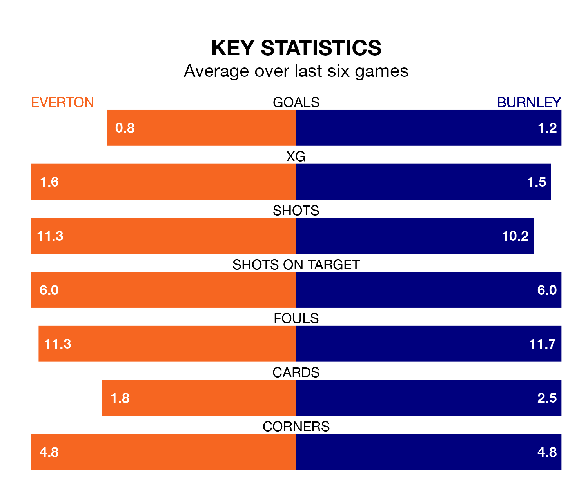

Everton face Burnley at Goodison Park on Saturday looking to secure a first win in 14 Premier League games.
The Toffees have lost seven and drawn six matches since they last earned three points – against Burnley on December 16.
They face a Burnley side who have won one and drawn five over that time.
Burnley are 19th in the table after 31 games, of which they have won four and drawn seven, earning 19 points.
Everton are five places ahead of the Clarets in 14th, with eight wins and eight draws putting them on 32 points.
In Jordan Pickford, the Toffees can rely on one of the league's safest pair of hands. He has kept eight clean sheets in his 30 appearances this season, and only one other 'keeper – Arsenal's David Raya – has been able to prevent the opposition scoring on more occasions in the Premier League.
In the away team's net, James Trafford has two clean sheets in 28 games. He has conceded a goal every 44 minutes, 70% more often than the 73 minutes between goals for Pickford.
In the last 10 years, Everton and Burnley have played each other on 16 occasions. Everton won nine of them, Burnley six, and they drew once.
On average, the Toffees scored 1.8 goals and the Clarets 1.0 in those matches.
Their last meeting was on December 16, when Everton won 2-0 away.
With 32 goals in 31 games so far this season, Burnley are the league's third-lowest scorers with 1.0 goals per game. And they are conceding more than average, letting in 66 goals at a rate of 2.1 per game.
The hosts are also below average scorers, with 1.0 goal per game, compared to a league average of 1.6. They have conceded 1.4 goals per game.
Everton's last match was on Tuesday, a 1-1 draw against Newcastle United, with Dominic Calvert-Lewin getting the goal for the Toffees.
Burnley drew 1-1 with Wolverhampton Wanderers last time out, also on Tuesday, with Jacob Bruun Larsen on the scoresheet.
Saturday's match will be refereed by Michael Oliver, who has taken charge of 20 Premier League games so far this season, issuing four red cards and booking 80 players. He has awarded five penalties.
The last Everton game Oliver refereed was a 2-2 home draw with Tottenham Hotspur on February 3. His last Burnley match was their 3-1 loss away at Arsenal on November 11.
Updated: 16:41 (UTC), 04/04/24